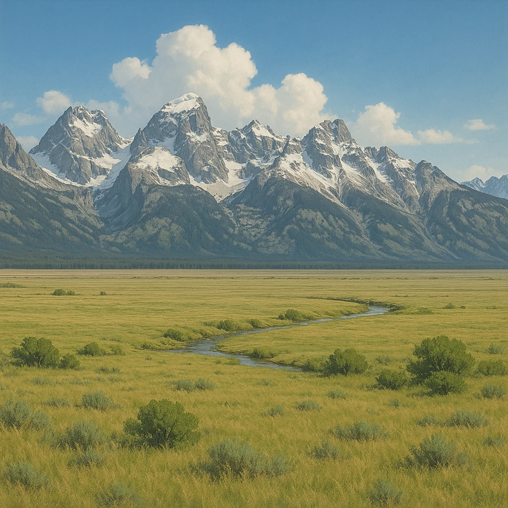

Ⅰ-2
地形カタログ
東西に
2つの山脈
、中央に
大平原
と大河
①
西部・4000m級のけわしい山脈
ロッキー山脈
②
東部・なだらか（付近に炭田）
アパラチア山脈
③
中央部を南北に流れる最大の川
ミシシッピ川
④
アメリカとカナダの国境の湖
五大湖
⑤
ロッキーの東・肉牛の放牧地帯
グレートプレーンズ
⑥
その東・広大な小麦地帯
プレーリー
⑦
③の大河が流れる広大な平原
中央平原
⑧
南に広がる島々
西インド諸島

第7章 北アメリカ州
SEED EDUCATION